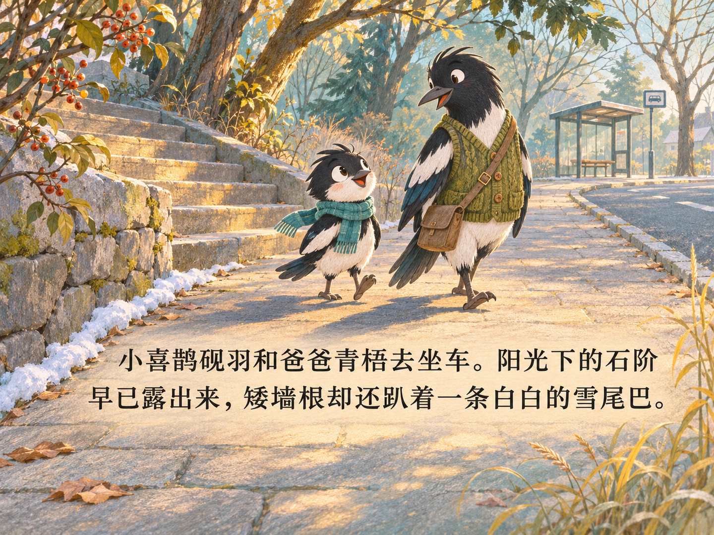

<!doctype html><html lang="zh-CN"><meta charset="utf-8"><meta name="viewport" content="width=device-width, initial-scale=1, viewport-fit=cover"><title>墙根的雪尾巴</title><style>*{box-sizing:border-box}body{margin:0;background:#243643;color:#faf3df;font:18px system-ui}main{height:100dvh;display:flex;flex-direction:column;align-items:center;justify-content:center;gap:12px;padding:0 8px calc(8vh + env(safe-area-inset-bottom))}img{object-fit:contain;max-width:100%;max-height:calc(100dvh - 8vh - env(safe-area-inset-bottom) - 60px)}nav{display:flex;align-items:center;gap:14px;height:44px;flex-shrink:0}button{border:0;border-radius:8px;min-height:44px;padding:0 13px;background:#f3deb2;color:#243643;font:inherit}button:disabled{opacity:.5}a{color:#f3deb2}</style><main><nav aria-label="绘本阅读"><a href="../">首页</a><button id="prev">上一页</button><span id="count" aria-live="polite"></span><button id="next">下一页</button></nav></main><script>const images=["page-01.webp","page-02.webp","page-03.webp","page-04.webp","page-05.webp","page-06.webp","page-07.webp","page-08.webp","page-09.webp","page-10.webp"],stories=["小喜鹊砚羽和爸爸青梧去坐车。阳光下的石阶早已露出来，矮墙根却还趴着一条白白的雪尾巴。","砚羽停下脚步：“昨天的雪怎么还剩这一条？”他猜，墙根的雪或许天生就化得慢。爸爸说回家可以试一试。","回到家，屋檐下还留着松松的雪。爸爸找来两只一样的小白碟，砚羽给每只碟子放一勺雪，再轻轻拍平。","爸爸把两只碟子放到同一张长凳上。一头太阳晒得到，另一头在墙影里。砚羽的围巾被风吹得晃了一下。","砚羽在晒太阳的碟子后立起一面红旗，又在阴凉处的碟子后立起蓝旗。这样再过来看，他就不会认错了。","没过多久，红旗前的雪边亮了，慢慢渗出一圈水。蓝旗前的雪还留着勺子压出的边，砚羽没去碰它。","砚羽回屋拼好最后一块公交车拼图，再跑出来看。红旗前只剩一座小小的雪岛，蓝旗前的雪堆还有半碟大。","砚羽摸摸凳边，晒太阳的一头暖些。爸爸说：“阳光带来热，雪得到热就能化成水。这次太阳那边化得快。”","“墙边那条雪尾巴呢？”砚羽问。爸爸说：“它也许在阴凉里，也许堆得更厚。明天我们从旁边看看。”","第二天去车站时，砚羽又认出了雪尾巴。露在太阳下的一头细了，墙影里还有短短一截。他指给爸爸看，绕着它走。"];const page=document.querySelector("#page"),prev=document.querySelector("#prev"),next=document.querySelector("#next"),count=document.querySelector("#count");let i=0,start;function show(n){i=Math.min(images.length-1,Math.max(0,n));page.src=images[i];page.alt=stories[i];count.textContent=(i+1)+" / "+images.length;prev.disabled=i===0;next.disabled=i===images.length-1}prev.onclick=()=>show(i-1);next.onclick=()=>show(i+1);document.addEventListener("keydown",e=>{if(e.key==="ArrowRight")show(i+1);if(e.key==="ArrowLeft")show(i-1)});page.addEventListener("touchstart",e=>start=e.changedTouches[0].clientX,{passive:true});page.addEventListener("touchend",e=>{const d=e.changedTouches[0].clientX-start;if(Math.abs(d)>45)show(i+(d<0?1:-1))},{passive:true});show(0)</script></html>